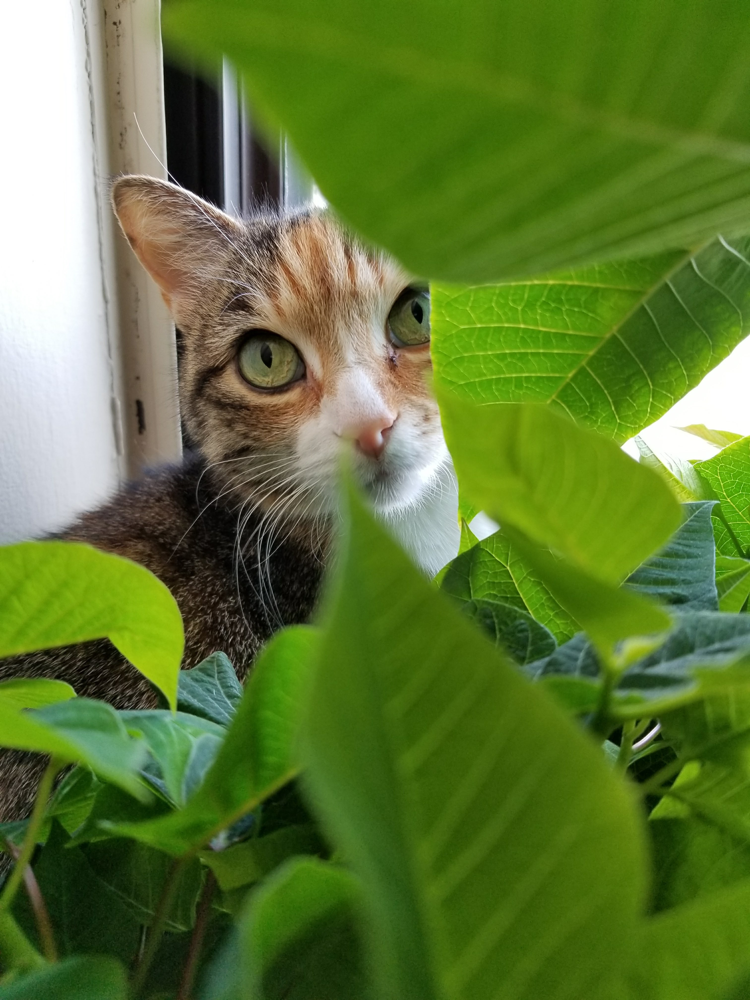
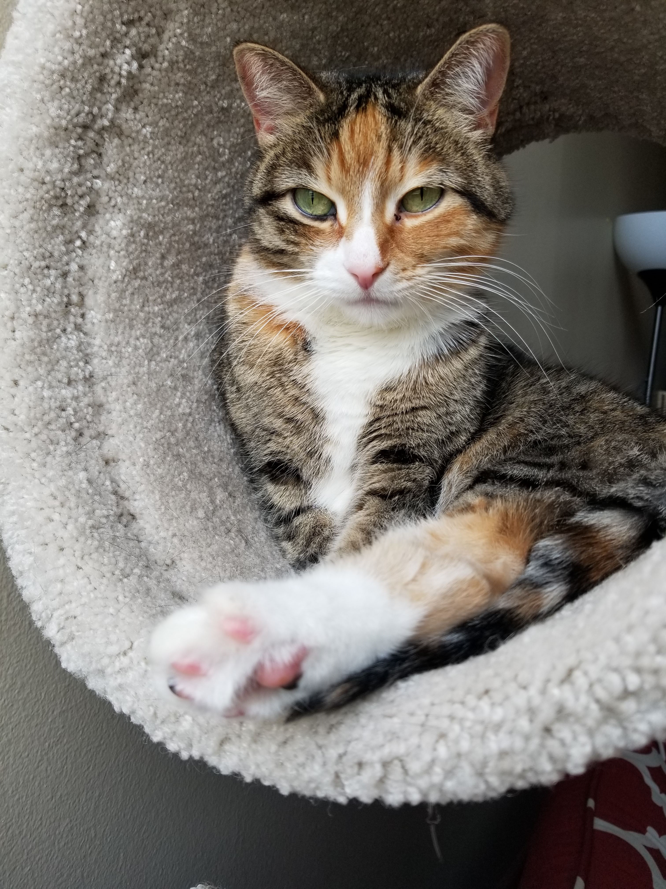

Happy Endings
If you've adopted a cat through our cafe, we'd love to hear back from you! Below are some stories from previous happy endings for our cats and kittens.
If you are interested in adopting, check out our Adoption Page!
Fiona


Fiona's mom, Lily, was fostered by Paws for a Cuppa. About a week into Lily's stay with us, she delivered three beautiful kittens: Fiona, Sarah, and Charlie! Fiona was adopted into a loving home once she was old enough to leave her mom; she enjoys hunting her own tail, climbing tall shelves, and hiding in houseplants.
Phoebe
Phoebe is a terror, but a cute one. This adorable calico is still playful as a kitten and continues to entertain her family with her antics every day.